e-mail: arianna.miraval@inaf.it 33institutetext: INAF, Osservatorio Astronomico di Cagliari, Via della Scienza 5, I-09047, Selargius (CA), Italy 44institutetext: Max-Planck-Institut fr Radioastronomie, Auf dem Hgel 69, D-53121, Bonn, Germany 55institutetext: Institute of Space Sciences (ICE, CSIC), Campus UAB, Carrer de Can Magrans s/n, 08193, Barcelona, Spain 66institutetext: Institut d’Estudis Espacials de Catalunya (IEEC), Carrer Gran Capità 2–4, 08034, Barcelona, Spain 77institutetext: ASTRON, The Netherlands Institute for Radio Astronomy, Oude Hoogeveensedijk 4, 7991 PD, Dwingeloo, the Netherlands 88institutetext: INAF, Osservatorio Astronomico di Capodimonte, Salita Moiariello 16, I-80131, Napoli, Italy 99institutetext: Instituto de Astrofisica de Canarias, Via Lactea, La Laguna E-38200, Santa Cruz de Tenerife, Spain 1010institutetext: INAF, Osservatorio Astronomico di Padova, Vicolo dell’Osservatorio 5, I-35122, Padova, Italy 1111institutetext: Università degli Studi di Cagliari, Dipartimento di Fisica, S.P. Monserrato-Sestu km 0,700, I-09042 Monserrato (CA), Italy 1212institutetext: INAF, Osservatorio Astronomico di Roma, Via Frascati 33, I-00078, Monteporzio Catone (Roma), Italy 1313institutetext: INAF, Istituto di Astrofisica e Planetologia Spaziali, Via Fosso del Cavaliere 100, I-00133, Roma, Italy 1414institutetext: Sapienza Università di Roma, Piazzale Aldo Moro 5, I-00185, Roma, Italy 1515institutetext: Center for Astro, Particle and Planetary Physics, New York University Abu Dhabi, PO Box 129188, Abu Dhabi, UAE 1616institutetext: Center of Studies and Activities for Space (CISAS) ‘G. Colombo’, University of Padova, Via Venezia 15, I-35131, Padova, Italy 1717institutetext: Anton Pannekoek Institute for Astronomy, University of Amsterdam, Science Park 904, 1098 XH Amsterdam, The Netherlands 1818institutetext: Department of Physics, McGill University, 3600 University Street, Montréal, QC H3A 2T8, Canada 1919institutetext: McGill Space Institute, McGill University, 3550 University Street, Montréal, QC H3A 2A7, Canada 2020institutetext: Università degli Studi di Padova, Dipartimento di Fisica e Astronomia, Via F. Marzolo 8, I-35131, Padova, Italy
دليل على انبعاث صدمة داخل الثنائية من
النابض ذي الظهر الأحمر PSR J1048+2339††thanks: The results reported in this paper are based on observations carried out with ESO-VLT (0104.D-0589), SRT (17-19 and 52-19 proposals), LOFAR (id. 405751), Galileo, and Swift telescopes.
نقدم أرصادًا متزامنة متعددة الأطوال الموجية للنابض ذي الظهر الأحمر ذي فترة 4.66 ms، PSR J1048+2339. أجرينا تحليلًا طيفيًا محلول الطور باستخدام التلسكوب الكبير جدًا (VLT) بحثًا عن دلائل قرص تراكم متبق أو انبعاث صدمة داخل الثنائية، مع تقييد نصف سعة السرعة الشعاعية للنجم المرافق () وتقدير كتلة النجم النيوتروني (). وباستخدام أطياف FORS2-VLT متوسطة الدقة، قسنا سرعة للنجم المرافق قدرها km s-1 ونسبة كتلة ثنائية قدرها . بدمج نتائجنا لـ و ، قيّدنا كتلة النجم النيوتروني والمرافق إلى و ، على التوالي، حيث إن هو ميلان النظام. تُظهر خريطة دوبلر لخط انبعاث H سمة بقعية عند الموضع المتوقع للنجم المرافق وبقعة ساطعة ممتدة قريبة من نقطة لاغرانج الداخلية. نفسر هذا الانبعاث الممتد بأنه أثر صدمة داخل الثنائية ناشئة عن التفاعل بين الريح النسبوية للنابض والمادة المغادرة للنجم المرافق. وقد يكون فقدان الكتلة من النجم الثانوي ناجمًا إما عن فيضان فص روش أو عن اجتثاث طبقته الخارجية بفعل ريح النابض الطاقية. وعلى النقيض من ذلك، لا نجد دليلًا على وجود قرص تراكم. نعرض نتائج أرصاد راديوية متزامنة بتلسكوب Sardinia Radio Telescope (SRT) وتلسكوب Low-Frequency Array (LOFAR) عند ثلاثة ترددات مختلفة (150 MHz و 336 MHz و 1400 MHz). لم نجد في بحثنا إشارة راديوية نبضية. ويرجح أن ذلك يعود إلى كل من التلألؤ ووجود مادة مطرودة من النظام يمكن أن تسبب امتصاص الإشارة الراديوية عند الترددات المنخفضة. ويؤكد هذه الفرضية رصد آخر بـ SRT (النطاق L) أُخذ في 2019، وفيه كُشفت إشارة نبضية. وأخيرًا، نعرض محاولة للبحث عن نبضات بصرية باستخدام IFI+Iqueye المثبت على تلسكوب Galileo بقطر 1.2 m في مرصد Asiago.
Key Words.:
النجم النابض: منفرد (PSR J1048+2339) – النجوم: نيوترونية – الأشعة السينية: ثنائيات – الثنائيات: طيفية1 مقدمة
يُعتقد أن النباضات الملي ثانية الثنائية (MSPs) هي الناتج النهائي لعملية التراكم في أنظمة الثنائيات السينية منخفضة الكتلة (LMXBs) (Alpar et al. 1982; Radhakrishnan and Srinivasan 1982). تكتسب MSPs فترات دوران قصيرة ( ms) عبر تراكم المادة والزخم الزاوي من نجم مرافق في عملية تُسمى “إعادة التدوير”، ويمكن أن تستمر حتى بضعة مليارات سنة (Tauris et al. 2013). خلال طور التراكم المطول هذا، تُرصد أنظمة LMXB كمصادر سينية ساطعة (Campana et al. 1998)، ويرجع ذلك أساسًا إلى وجود قرص تراكم حول النجم النيوتروني (NS). وتتميز الأطياف البصرية بخطوط انبعاث قوية ثنائية القمة من H وHe تنشأ في قرص التراكم الكثيف بصريًا (van Paradijs and McClintock 1995). وعندما ينخفض معدل انتقال الكتلة ينتهي هذا الطور الساطع في الأشعة السينية، وتختفي خطوط الانبعاث ثنائية القمة، ويصبح الانبعاث في نطاقي الراديو و-ray، والمدعوم بدوران NS، هو الغالب. حظي نموذج إعادة التدوير بدعم قوي من أرصاد النبضات السينية الملي ثانية في النباضات السينية الملي ثانية المتراكمة العابرة (AMXPs؛ Wijnands and van der Klis 1998) ومن النبضات السينية المتماسكة أثناء انفجارات الأشعة السينية من النوع I (Strohmayer et al. 1996). وجاء البرهان النهائي على هذا السيناريو التطوري مع اكتشاف النباضات الملي ثانية الانتقالية (tMSPs، انظر Papitto and de Martino 2020 للمراجعة)، وهي أنظمة أظهرت انتقالات بين حالتي LMXB وMSP الراديوية على مقاييس زمنية قصيرة جدًا (Archibald et al. 2009; Papitto et al. 2013; Bassa et al. 2014).
تُعد النباضات “العنكبوتية” صنفًا فرعيًا من MSPs الثنائية، يكون فيه النابض في مدار ضيق جدًا ( يوم) حول نجم مرافق منخفض الكتلة يفقد كتلته (Roberts 2013). ويمكن للغاز المتأين المفقود من المرافق أن يعترض الإشعاع القادم من NS، ومن ثم يشوهه أو حتى يمتصه كليًا، مسببًا كسوفات منتظمة لإشارة النابض الراديوية. بعد اكتشاف أول نابض ثنائي كسوفي، PSR B1957+20 (Fruchter et al. 1988a, b)، عُثر على أنظمة مشابهة كثيرة في العناقيد الكروية11 1 https://www3.mpifr-bonn.mpg.de/staff/pfreire/GCpsr.html وفي حقل المجرة22 2 https://apatruno.wordpress.com/about/millisecond-pulsar-catalogue/. وتنقسم النباضات العنكبوتية إلى جماعتين فرعيتين إضافيتين (Roberts 2013): الأرامل السوداء (BWs) وذوات الظهر الأحمر (RBs). وتتميز نباضات BW بنجم مرافق شبه منحط ذي كتلة منخفضة جدًا (). ويُدفع فقدان كتلة المرافق عادةً بتبخر الطبقة الخارجية للنجم، الناجم عن تشعيع سطحه بريح النابض القوية. أما أنظمة RB فلها مرافقات غير منحطة أكثر كتلة (0.1-0.4 ) لا تُجتث إلا جزئيًا. تُظهر معظم الأنظمة من كلا الصنفين كسوفات منتظمة لإشارتها الراديوية، تغطي جزءًا صغيرًا (¡20%) من المدار في BWs وجزءًا أكبر (حتى 80%) من المدار في RBs (Broderick et al. 2016; Polzin et al. 2020).
تمثل هذه العناكب أنظمة أساسية لدراسة تطور MSPs الثنائية، بل وأكثر من ذلك لاستقصاء نشأة MSPs المعزولة. فجميع tMSPs المكتشفة حتى الآن، والتي تمثل تقدمًا مهمًا في فهم MSPs الثنائية، هي أنظمة RB. وقد تنشأ MSPs المعزولة من أنظمة BW عندما يختفي نجمها المرافق الأصلي، بعد اجتثاثه كاملًا بواسطة الجسيمات الطاقية الناتجة عن ريح النابض أو بواسطة جسيمات -ray المدعومة بطاقة تباطؤ دوران النابض (Levinson and Eichler 1991; Tavani and London 1993). غير أن المحاكاة تشير إلى أن التبخر المباشر وحده لا يمكن أن يكون مسؤولًا عن تكوين معظم MSPs المعزولة (Ginzburg and Quataert 2020). يقترح Ginzburg and Quataert (2021) أن ريح الاجتثاث، عند اقترانها بالمجال المغناطيسي للمرافق، قادرة على إزالة الزخم الزاوي المداري من الثنائية عبر الكبح المغناطيسي، محافظةً على فيضان مستقر لفص روش ومؤديةً بذلك إلى التبخر الكامل للنجم المرافق. وتعد هذه الأنظمة أيضًا مختبرات ممتازة لدراسة تفاعل المادة والإشعاع في نظام الكثافة المنخفضة والمجال المغناطيسي العالي. وهذه الشروط نموذجية للصدمات الناشئة من التفاعل بين المادة المنبعثة من النجم المرافق وريح النابض النسبوية. فضلًا عن ذلك، تُعد RBs وBWs حاسمة لتقييد الكتلة القصوى لـ NS (انظر Linares 2019 و Strader et al. 2019 للمراجعة).
في هذه الورقة نستقصي هذين الجانبين، إذ نقيّد هندسة الصدمة وكتلة NS في نظام RB. وتتيح لنا طريقة التصوير المقطعي بدوبلر (Marsh and Horne 1988) اشتقاق خرائط سرعة ثنائية الأبعاد لمنطقة انبعاث H، وذلك بدمج أطياف مأخوذة عند أطوار مدارية مختلفة على امتداد المدار كله. وتمكننا هذه التقنية من التمييز بين نمط قرص التراكم والهندسة والحركيات الأعقد المتوقعة في سيناريو انبعاث صدمة النابض. ولم تُستغل هذه الطريقة بعد لأنظمة RB، لأن عددًا قليلًا منها فقط يُظهر بوضوح خطوط انبعاث في أطيافه البصرية أثناء حالة النابض الراديوي (على سبيل المثال PSR J1628–3205، Cho et al. 2018).
اكتُشف PSR J1048+2339 (ويشار إليه فيما يلي بـ J1048) بتلسكوب Arecibo في بحث عن مصادر Fermi غير معرفة عند خطوط عرض عالية (Cromartie et al. 2016). وصنفه Deneva et al. (2016) كنظام RB باستخدام أرصاد متعددة الأطوال الموجية. J1048 هو NS يدور بفترة 4.66-ms وبقدرة تباطؤ دوران 1.2 erg s-1. وهو جزء من نظام ثنائي ضيق بفترة مدارية قدرها 6.01 ساعة، ويقع على مسافة تقارب 1.7 kpc (Deneva et al. 2021). وتبلغ كتلة نجمه المرافق 0.4 ودرجة حرارته الفعالة 4200 K (Yap et al. 2019). ميلان النظام غير مقيد جيدًا. يثبت Yap et al. (2019) الميلان عند حد أعلى نظري قدره 76∘ لأن كسوفات الأشعة السينية في بيانات Chandra غير مرصودة. وعلى النقيض من ذلك، تُظهر الدراسات الطيفية لـ Strader et al. 2019 أن النظام إما يجب أن يكون قريبًا من الوضع الحافي ( درجة)، أو أن كتلة النابض يجب أن تكون أعلى من 2 M⊙. ويظهر النظام كسوفات راديوية عبر جزء كبير من المدار (50 %، Deneva et al. 2016, 2021). وللنابض الراديوي نظير في -ray، هو 4FGL J1048.6+2340، ويُظهر نبضات -ray بدلالة إحصائية قدرها 8 (Deneva et al. 2021). تكشف الدراسات البصرية والسينية (Cho et al. 2018; Yap et al. 2019) عن تعديل مداري قوي مع تغيرات سريعة: إذ يتغير المنحنى الضوئي البصري من شكل إهليلجي إلى شكل شبيه بالجيبي في أقل من 14 أيام. وتبلغ القدرات البصرية المتوسطة عندما يهيمن تسخين ريح النابض mag و mag (Yap et al. 2019). أما عندما يهيمن التعديل الإهليلجي على التعديل المداري فيكون النظام أخفت بمقدار 0.3-0.4 mag. كما أن المنحنى الضوئي في الأشعة السينية معدل بقوة، مع حد أدنى متمركز عند = 0.0، وهو ما يقابل الاقتران السفلي للنجم المرافق وفق اصطلاحنا. وتُظهر الأطياف البصرية المكتسبة بتلسكوب SOAR ذي القطر 4-m أشد تغير رُصد حتى الآن لأي من RBs (Strader et al. 2019). وتظهر خطوط الانبعاث القوية في بعض الحالات ثنائية القمة، وأحيانًا أحادية القمة، وتغيب عند أطوار مدارية أخرى. ويحول ضعف أخذ عينات الطور المداري على عدة عهود دون تحديد آمن لأصل منطقة خطوط الانبعاث.
في هذه الورقة نقدم حملة متعددة الأطوال الموجية لـ J1048. وباستخدام أرصاد متزامنة من Very Large Telescope (VLT)، وSardinia Radio Telescope (SRT)، وتلسكوب Low-Frequency Array (LOFAR)، وتلسكوب Galileo، وSwift أُجريت أثناء حالة النابض الراديوي، ندرس حركيات المادة وهندستها في هذا النظام الثنائي المتفاعل. في القسم 2 نصف مجموعة بياناتنا وخطوات اختزال البيانات. وفي القسم 3 نقدم الطيف المتوسط وتغير خط انبعاث H والمنحنى الضوئي البصري، في حين تُعرض منحنيات السرعة الشعاعية في القسم 4. وفي القسم 5 نعرض التصوير المقطعي بدوبلر لـ H. وتُخصص الأقسام 6-7 لتحليل التوقيت الراديوي والبصري. وفي القسم 8، نناقش النتائج ونقدم آفاقًا مستقبلية.
| Telescope/Instrument | Mode | Band | Start time (UTC) | Net exposure (s) |
|---|---|---|---|---|
| VLT-FORS2 | Imaging | -band | 2020 Mar 19 00:49:07 | 200 |
| VLT-FORS2 | Grism 1200R+93 | 575 - 731 nm | 2020 Mar 19 00:59:40 | 19200 |
| SRT-1 | Baseband-Search | P (0.3 - 0.4 GHz) / L (1.3 - 1.8 GHz) | 2019 Aug 26 14:20:28 | 5400 |
| SRT-2 | Baseband-Search | P (0.3 - 0.4 GHz) / L (1.3 - 1.8 GHz) | 2020 Mar 18 20:10:50 | 29960 |
| LOFAR | Raw voltages | 110 - 188 MHz | 2020 Mar 18 21:01:00 | 25200 |
| Swift-XRT | Photon Counting | 0.3 - 10 keV | 2020 Mar 18 21:43:14 | 3611 |
| Swift-UVOT | Imaging | 2020 Mar 18 21:43:19 | 3419 | |
| Galileo/IFI+Iqueye | Fast timing | 400 - 700 nm | 2020 Mar 18 23:26:33 | 9000 |
2 الأرصاد
في مارس 2020، أجرينا حملة متعددة الأطوال الموجية مركزة على J1048 مع أرصاد متزامنة في نطاقات الأشعة السينية وفوق البنفسجية والبصرية والراديوية. يسرد الجدول 1 الأرصاد التي حُللت ونوقشت في هذه الورقة. وفيما يلي نصف تحليل البيانات لمجموعات البيانات المختلفة المكتسبة.
2.1 الأرصاد البصرية وفوق البنفسجية
2.1.1 التلسكوب الكبير جدًا
أُجريت الأرصاد الطيفية البصرية لـ J1048 في مارس 19، 2020 في Observatorio Monte Paranal، باستخدام تلسكوب ESO Antu بقطر 8.2 m (UT1) المجهز بمطياف FORS2 (Appenzeller et al. 1998). خلال الليل تراوحت الرؤية الفلكية بين ، وكانت مستقرة معظم الوقت بين . حُصل على ما مجموعه ستة عشر طيفًا تغطي دورة مدارية كاملة، باستخدام تعريضات طويلة قدرها 1200 s. استخدمنا شقًا قدره ، كان موجهًا دائمًا على امتداد زاوية الشلل، والمحزوز-المنشور 1200R+93، المتمركز عند 6500 Å وبتشتت قدره 0.76 Å/pixel. ولاستخراج المنحنى الضوئي البصري، حصلنا على صورة أو صورتين في النطاق بتعريض قدره 20 s، مرة كل اقتناءين طيفيين، بمجموع 10 صورة.
أُنجز اختزال الصور باتباع الإجراءات القياسية: طرح إطار انحياز متوسط، والقسمة على إطار مسطح مُطبّع. وأُجري القياس الفلكي باستخدام فهرس USNOB1.033 3 http://tdc-www.harvard.edu/catalogs/ub1.html. ونُفذ قياس الفتحة الضوئي ببرنامج PHOTOM، وهو جزء من حزمة STARLINK44 4 http://starlink.eao.hawaii.edu/starlink. وأُجريت المعايرة الضوئية مقابل نجوم Stetson القياسية (Stetson 2000). ولتقليل أي أثر نظامي، نفذنا قياسًا ضوئيًا تفاضليًا بالنسبة إلى مجموعة من نجوم مرجعية محلية معزولة وغير مشبعة. وأُجري اختزال الأطياف واستخراجها باستخدام خط أنابيب ESO-FORS55 5 https://www.eso.org/sci/software/pipelines/fors/fors-pipe-recipes.html وحزمة برمجيات ESO-MIDAS66 6 https://www.eso.org/sci/software/esomidas/. وقد تحققت معايرة الأطوال الموجية والفيض للأطياف باستخدام مصباح هيليوم-أرغون ورصد نجوم قياسية طيفية ضوئية، على التوالي، في بداية تشغيل الرصد ونهايته. كما تحققنا من استقرار معايرة الطول الموجي باستخدام خطوط انبعاث سماء الليل. وللارتباط المتبادل بين الأطياف والقوالب من الأنواع المتأخرة، ولتحليل التصوير المقطعي بدوبلر، استخدمنا حزمة MOLLY التي طورها Tom Marsh77 7 http://deneb.astro.warwick.ac.uk/phsaap/software/ وحزمة pydoppler88 8 https://github.com/Alymantara/pydoppler (Spruit 1998)، على التوالي.
2.1.2 تلسكوب Galileo/IFI+Iqueye
رصدنا J1048 باستخدام IFI+Iqueye المثبت على تلسكوب Galileo بقطر 1.2 m في Asiago بإيطاليا. Iqueye+99 9 https://web.oapd.inaf.it/zampieri/aqueye-iqueye/index.html هو عداد فوتونات سريع بمجال رؤية قدره 12.5 arcsec وبقدرة على وسم الفوتونات المكتشفة زمنيًا بدقة دون ns (Naletto et al. 2009). ويرتبط الجهاز بتلسكوب Galileo عبر ألياف بواسطة أداة مخصصة، هي Iqueye Fiber Interface (IFI؛ Zampieri et al. 2019). أُجري ما مجموعه 3 اقتناءً (obs. ID 20200319-002631، 20200319-020229، 20200319-032617) في مارس 18–19، 2020، بين 23:26:33.4 و 02:56:18.0 UTC. دام الاقتناءان الأولان 3600 s والثالث 1800 s. وقد رُوقبت خلفية السماء بانتظام بين الأرصاد الموجهة إلى الهدف. وتراوح المعدل المتوسط عند موضع النابض بين و counts s-1 بسبب تغيرات في خلفية السماء. ولم يُكشف النجم المرافق بدلالة معنوية.
أُجري اختزال البيانات ببرنامج مخصص1010 10 QUEST v. 1.1.5، انظر Zampieri et al. (2015).. وتضمن سلسلة الاقتناء والاختزال كاملة دقة مطلقة قدرها ns بالنسبة إلى UTC (Naletto et al. 2009). وحُولت أزمنة وصول الفوتونات إلى مركز الكتلة باستخدام TEMPO2 بوحدات زمن TDB (Hobbs et al. 2006) وبالزيجات الفلكية JPL DE421. موضع النابض هو RA=10:48:43.4183، DEC=+23:39:53.411 عند MJD 56897.0 (Deneva et al. 2016). صححنا حركة النابض على طول المدار باستخدام الفترة المدارية يومًا ونصف المحور الأكبر المسقط ثانية ضوئية لـ Deneva et al. (2016)، في حين اشتُق زمن المرور بالعقدة الصاعدة MJD (الزمن الديناميكي لمركز الكتلة) من رصد SRT في أغسطس 19، 2019 (انظر القسم 6).
2.1.3 Swift-UVOT
رصد التلسكوب البصري فوق البنفسجي (UVOT) (Roming et al. 2005) على متن مرصد Neil Gehrels Swift (Gehrels et al. 2004) المصدر J1048 بمرشحات (= 346.5 nm)، و (= 439.2 nm)، و (= 546.8 nm)، و (= 260.0 nm)، و (= 224.6 nm)، و (= 192.8 nm) مدة 3.4 ks في مارس 18–19، 2020 (انظر الجدول 2). أجرينا قياسًا ضوئيًا بفتحة باستخدام منطقة دائرية متمركزة على المصدر بنصف قطر لمرشحات UV و للمرشحات البصرية. واستُخرج انبعاث الخلفية من منطقة مجاورة خالية من المصادر. ولم يُكشف الهدف في أي من الصور. وباستخدام أداة uvotsource ضمن برنامج تحليل Swift في حزمة HEASoft بالإصدار 6.281111 11 https://heasarc.gsfc.nasa.gov/docs/software/heasoft/، قدرنا الحدود العليا التالية بمستوى 3 للقدر البصري/فوق البنفسجي: mag، و mag، و mag، و19.5 mag، و19.6 mag، و20.1 mag (نظام Vega).
| Filter | Start time (UTC) | Net exposure (s) |
|---|---|---|
| 2020 Mar 18 21:43:19 | 288 | |
| 2020 Mar 19 03:51:32 | 299 | |
| 2020 Mar 18 21:46:45 | 143 | |
| 2020 Mar 19 03:53:48 | 149 | |
| 2020 Mar 18 21:48:30 | 143 | |
| 2020 Mar 19 03:54:58 | 149 | |
| 2020 Mar 18 21:50:17 | 576 | |
| 2020 Mar 19 03:56:09 | 600 | |
| 2020 Mar 18 21:57:07 | 143 | |
| 2020 Mar 19 04:00:39 | 149 | |
| 2020 Mar 18 21:58:52 | 383 | |
| 2020 Mar 19 04:01:49 | 397 |
2.2 الأرصاد الراديوية
رصدنا J1048 في مناسبتين مختلفتين في النطاق الراديوي.
في أغسطس 19، 2019 استخدمنا SRT بقطر 64-m لإجراء رصد مدته 1.5 ساعة بالمستقبل المحوري ثنائي النطاق L-P (Valente et al. 2010). في النطاق L ( GHz)، سُجلت إشارة الشدة الكلية كل 125 s بواسطة الواجهة الخلفية Australia Telescope National Facility (ATNF) Digital Filterbank Mark III (DFB1212 12 http://www.jb.man.ac.uk/pulsar/observing/DFB.pdf) في نمط البحث. واختير عرض النطاق الاسمي ليكون 1024 MHz، متمركزًا عند 1548 MHz ومقسمًا إلى 1024 قناة ترددية. اختير هذا الإعداد لمنع آثار التراكب الطيفي ضمن نطاق رصد المستقبل الفعلي، الذي يبلغ عرضه MHz. أما النطاق P فاقتُني في نمط النطاق الأساسي باستخدام الواجهة الخلفية Reconfigurable Open Architecture Computing Hardware1313 13 http://casper.ssl.berkeley.edu/wiki/ROACH (ROACH-1)، مسجلًا عرض نطاق قدره 80 MHz متمركزًا عند تردد 336 MHz. وبفضل وجود غطاء Gregorian، الذي يحجب المستقبل عن الإشارات الراديوية المتولدة من أجهزة التلسكوب، كان هذا الرصد خاليًا في معظمه من تداخل الترددات الراديوية (RFI) في كلا النطاقين.
أُجري الرصد الراديوي الثاني في الليلة الواقعة بين مارس 18–19، 2020. وفي هذه المرة رُصد J1048 في الوقت نفسه باستخدام SRT وتلسكوب Low-Frequency Array (LOFAR، Stappers et al. 2011; van Haarlem et al. 2013)، لمدة تزيد على مدار كامل. دام رصد SRT hr، وأُجري باستخدام الإعداد نفسه تمامًا كما في الرصد السابق، مع فرق وحيد هو أن غطاء Gregorian لم يكن مركبًا. أدى ذلك إلى حضور أعلى لـ RFI في هذه البيانات. بدأ LOFAR الرصد المتزامن لـ J1048 في نطاق VHF ( MHz) باستخدام هوائيات النطاق العالي في لب LOFAR بعد SRT بنحو 50 دقيقة، وسجل البيانات مدة 7 hr. جُمعت البيانات كجهود معقدة مكوَّنة حزمًا، بدقة 8-bit، من الاستقطابين الخطيين، بزمن أخذ عينات قدره 5.12 s ومقسمة إلى 400 نطاقًا فرعيًا تردديًا، عرض كل منها 0.195 MHz.
2.3 أرصاد الأشعة السينية
حللنا مجموعات بيانات مكتسبة في مارس 18–19، 2020 باستخدام تلسكوب الأشعة السينية Swift (XRT؛ Burrows et al. 2005) مضبوطًا على نمط عد الفوتونات (استبانة زمنية قدرها 2.5 s؛ معرفا الرصد 00034285004 و00034285005). ورُصد المصدر مدة 3.6 ks، بجمع التوجيهين. وكان المصدر بالكاد مكتشفًا، بنسبة إشارة إلى ضجيج كما قيّمتها أداة sosta في حزمة HEASoft. ومعدل عدّه الصافي هو (2.00.9) counts s-1 عبر نطاق الطاقة 0.3–10 keV (عدم اليقين عند مستوى ثقة 1). وبافتراض نموذج قانون قدرة ممتص بكثافة عمود امتصاص cm-2 وفهرس فوتوني (Cho et al. 2018)، يتحول معدل العد أعلاه إلى فيض مرصود قدره erg cm-2 s-1 وفيض ذاتي غير ممتص قدره erg cm-2 s-1، أو لمعان قدره erg s-1 (0.3–10 keV) لمسافة 1.7 kpc (Deneva et al. 2021). وهذه القيم متوافقة ضمن عدم اليقين مع تلك التي اشتقها Cho et al. (2018) وYap et al. (2019) باستخدام أرصاد Chandra أعمق، وتشير إلى أن النظام، في حقبة حملتنا متعددة النطاقات، بقي في حالة نابض راديوي مدعومة بالدوران.
3 الطيف المتوسط والتغير المداري
يهيمن على الطيف البصري المتوسط لـ J1048 خطوط امتصاص نموذجية للنجوم المتأخرة النوع (مثل TiO 6161 وFeII 6361 وFeII 6494) وخط انبعاث H. ويُعرض في الشكل 1 مع قالب K8 V، وهو HD 154712B، يطابق سمات الامتصاص جيدًا (انظر أيضًا القسم 4). وإحدى السمات النموذجية لقرص التراكم، وهي خط انبعاث HeI ، غائبة. كما أن ملف H في الطيف المتوسط معقد ويبدو أحادي القمة، مما يثير الشكوك في وجود قرص تراكم.
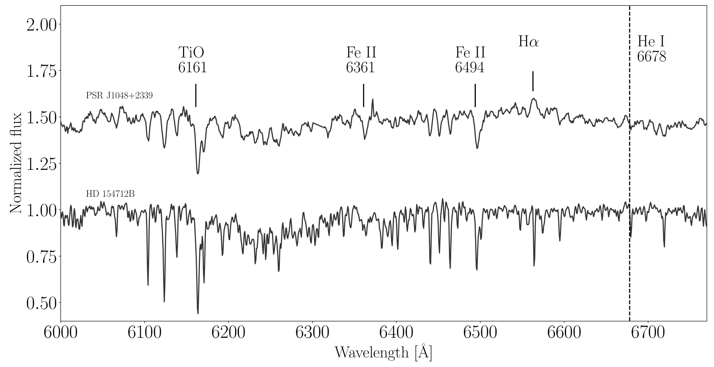
يُظهر انبعاث H تغيرات قوية على طول المدار (الشكل 2): فهو يختفي عند بعض الأطوار المدارية (مثلًا عند = 0.42)، في حين يظهر في عهود أخرى بمكوّن واحد (=0.63) وأحيانًا يعرض قمة ثانوية ضعيفة (=0.84). تُحسب الأطوار الثنائية باستخدام الزيج الراديوي للنابض ذي الدقة العالية جدًا (انظر القسم 6). وبالنظر إلى أن المدار شبه دائري، فإن اختيار زمن العقدة الصاعدة اعتباطي، وفي الورقة اخترنا إنقاصه بمقدار ، حيث إن هي الفترة المدارية، نسبةً إلى القيمة المحسوبة من الزيج الراديوي، بحيث يقابل الطور 0 الاقتران السفلي للنجم المرافق.
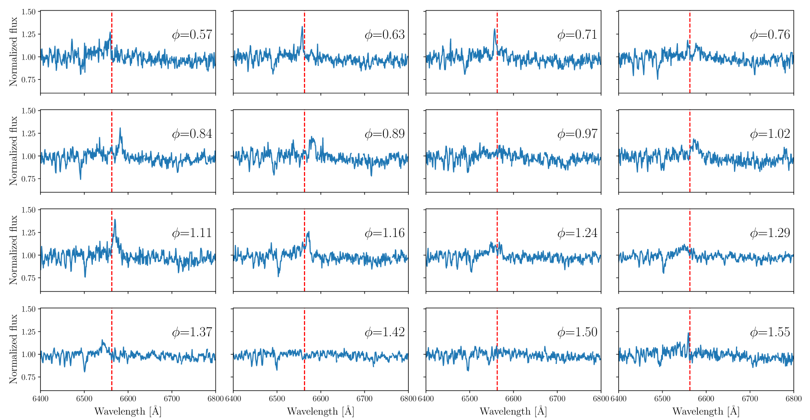
خلافًا لما وجده Strader et al. (2019)، فإن انبعاث H في حالتنا ضعيف وغير متناظر، مع مكونات زرقاء أو حمراء أقوى تبعًا للطور المداري. قرب الاقتران العلوي (=0.4–0.5)، يكاد انبعاث H يختفي تمامًا أو يُكشف كشفًا ضعيفًا كسمة امتصاص، بينما قرب الاقتران السفلي (=0) تظهر قمتان (انظر الشكل 3، الرسم الأيسر). المكوّن الأزرق أضعف ومرتبط بالنجم المرافق الذي يقترب من الأرض. أما المكوّن الأحمر، بالعكس، فتصدره مادة تبتعد عن الأرض على امتداد خط نظرنا. ويمكن عزو ذلك إلى المادة المتدفقة من النجم المانح نحو النابض. أنشأنا المطياف المتعقب، المعروض في اللوحة اليمنى من الشكل 3، لاستقصاء تغير الخط المداري بمزيد من التفصيل. ويعرض التطور المداري لخط انبعاث H في 16 حاويات طور. بين الطورين 0.75 و0.90، تظهر بوضوح بقعة انبعاث بسرعات موجبة لا تتتبع الحركة المدارية للنجم المرافق. وهذه إشارة أولى إلى وجود مادة فائضة من فص روش، أكدتها دراسة التصوير المقطعي بدوبلر (انظر القسم 5). والغاز الذي ينشأ منه انبعاث H، مع النجم المرافق المشعع، هما على الأرجح مسؤولان عن الكسوفات الراديوية لـ J1048 التي تغطي نحو نصف المدار (Deneva et al. 2016, 2021).
تُظهر قياسات العروض المكافئة (EWs) لخط انبعاث H لمحة من تعديل عند الفترة المدارية، وإن كان بدلالة إحصائية منخفضة (، انظر الشكل 4، اللوحة السفلية). ومتوسط EW لـ H هو -3.11.3 Å. في الأطياف المتعقبة لـ H في الشكل 3 يكون الانبعاث في حده الأقصى عند الطورين المداريين 0.1–0.2 و0.6–0.7. وللمقارنة، قسنا EWs للخطوط الفلزية (في المجالين الطيفيين 5970–6291 Å و6421–6522 Å). يُظهر منحنى EW للخطوط الفلزية ملفًا شبه جيبي مع دلالة قمة واحدة عند 3.9، في حين أن منحنى EW لـ H له ملف ضجيجي. وقد يعود ذلك إلى أن خط H ملوث بانبعاث ممتد كما توحي الأطياف المتعقبة (الشكل 3)، بينما تنشأ الخطوط الفلزية من النجم المرافق فقط.
يُظهر المنحنى الضوئي المتزامن في النطاق (الشكل 5) ملفًا غير متناظر شبيهًا بالجيبي مع حد أدنى حول وقدر متوسط mag (Vega). وتبلغ سعة المنحنى الضوئي من القمة إلى القمة نحو 0.9 قدرًا. ويشير شكل المنحنى الضوئي وتغيرات القدر على طول المدار إلى أن الانبعاث البصري للنظام تهيمن عليه الانبعاثات من الوجه الحار للمرافق، المسخن بريح النابض. ولا يملك المنحنى ملفًا جيبيًا صرفًا؛ فالحد الأدنى حول الطور صفر كما هو متوقع، في حين يسبق الحد الأقصى الطور 0.5.
خلافًا لما رصده Linares et al. (2018) في RB PSR J2215+5135، لا نجد تغيرات حادة في خطوط الامتصاص الطيفية للوجه المشعع والوجه البارد من النجم المرافق (الشكل 6). في PSR J2215+5135، تُظهر خطوط امتصاص Balmer وثلاثية Mg-I تغيرًا قويًا في EW كدالة للطور المداري بسبب التشعيع بالنابض. وتتغير EWs لخطوط امتصاص Balmer وثلاثية Mg-I بعامل و، على التوالي (Linares et al. 2018). وفي الواقع، كشف القياس الضوئي البصري لـ PSR J2215+5135 عن تعديل أحادي الحدبة مع تغيرات قدرية مقدارها mag على طول المدار، وهو نمط نموذجي لنظام شديد التشعيع (Breton et al. 2013). في J1048، تتغير EWs لخط انبعاث H ولخطوط الامتصاص الفلزية بعامل صغير ( و على التوالي) على طول المدار، ولا نرصد تغيرات كبيرة في درجة الحرارة بين الجانبين المظلم والساطع من النجم المرافق. لذلك يمكن عزو تغير السعة بمقدار mag المرصود في المنحنى الضوئي للنطاق إلى تشعيع نابضي معتدل.
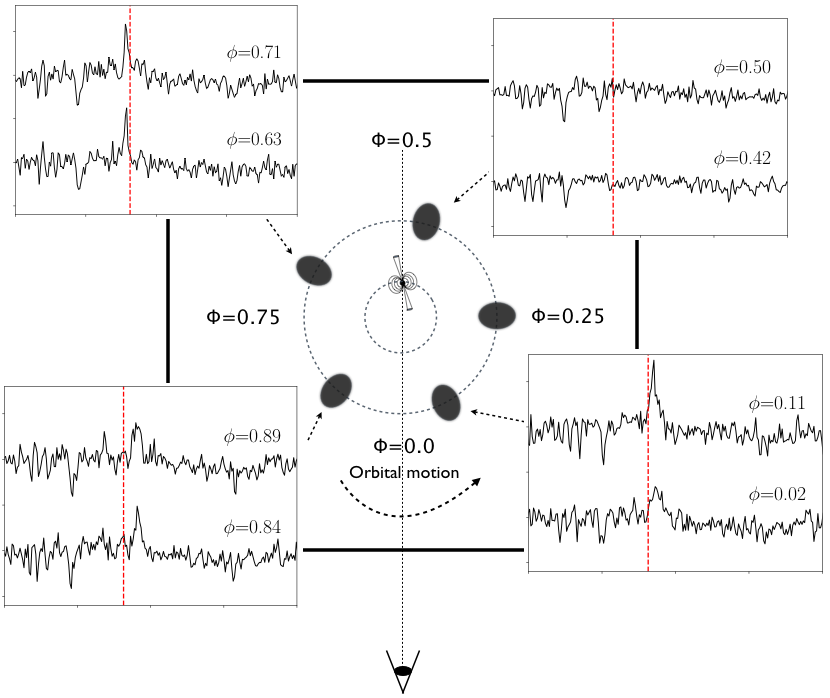
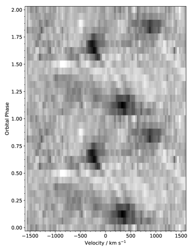
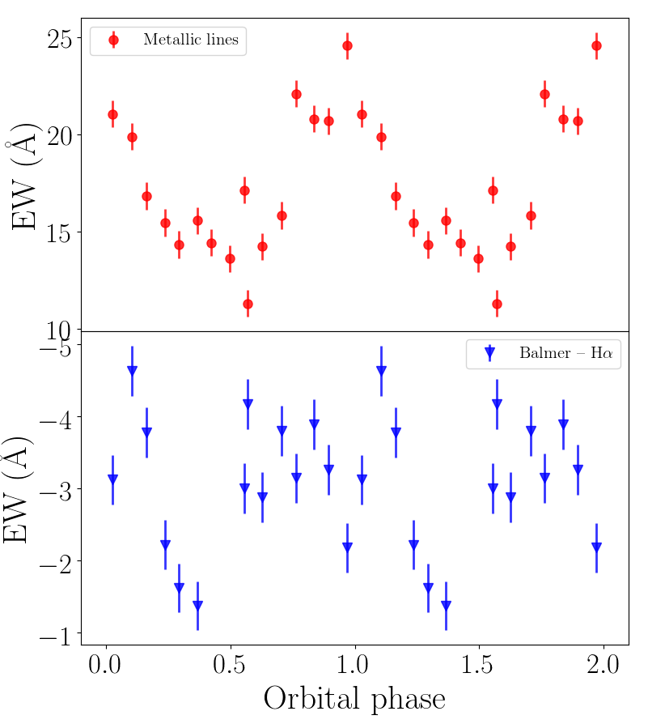
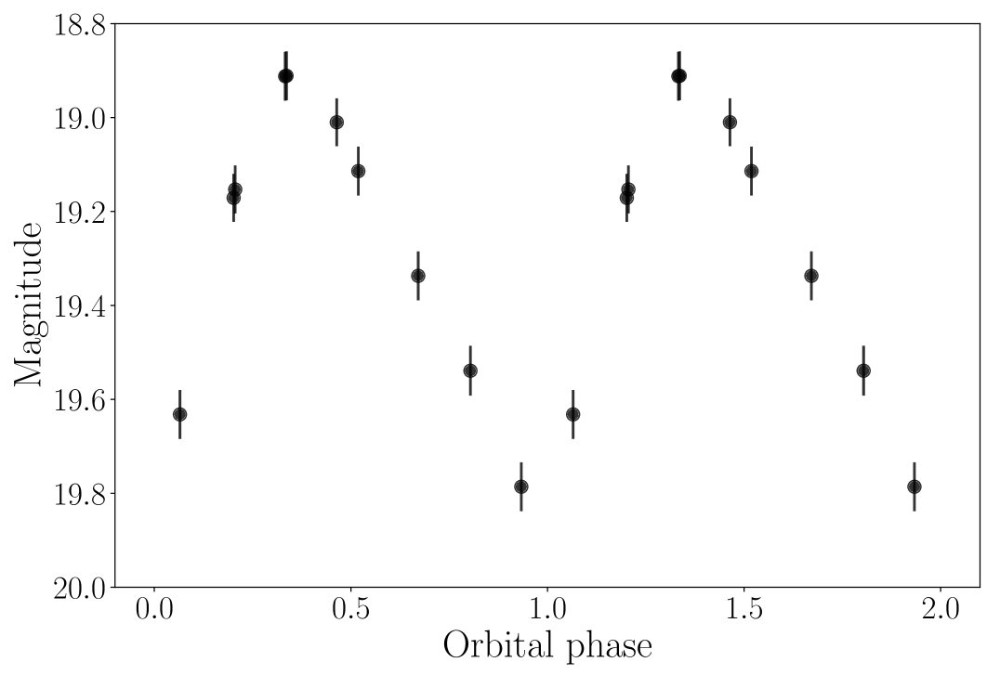
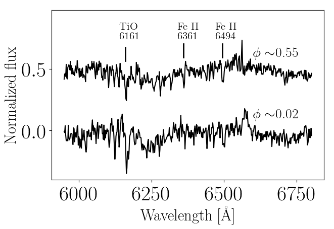
4 السرعة الشعاعية
اتباعًا لـ Yap et al. (2019) أجرينا ارتباطًا متبادلًا بين أطياف VLT-FORS2 البالغ عددها 16 وستة نجوم قوالب من النوع K V في المجالين الطيفيين 5970–6291 Å و6421–6522 Å (المأخوذة من Casares et al. 1996)، مع حجب السمات التيلورية وبين النجمية الرئيسة وخط انبعاث H، فحصلنا على ستة منحنيات سرعة شعاعية لكل نجم قالب. ثم أجرينا ملاءمة جيبية (بطريقة المربعات الصغرى) لبيانات السرعة الشعاعية، مع السماح لنصف سعة السرعة الشعاعية المسقطة () والسرعة النظامية للنجم المرافق () بالتغير. وأعدنا تحجيم أشرطة الخطأ لقياسات FORS2 بعامل 4.3، للحصول على مختزلة. وقد تحقق أفضل تطابق لقالبَي K2 V وK8 V، بدلالة متساوية (انظر الجدول 3).
| Template star | Spectral Type | K2 | /d.o.f | d.o.f | |
|---|---|---|---|---|---|
| (km s-1) | (km s-1) | ||||
| HD 184467 | K2 V | -14.43.7 | 339.95.4 | 1.0 | 13 |
| HD 29697 | K3 V | -17.83.2 | 341.04.5 | 1.2 | 13 |
| HD 154712A | K4 V | -10.23.3 | 341.34.7 | 1.4 | 13 |
| 61 Cyg A | K5 V | -17.93.1 | 341.24.4 | 1.4 | 13 |
| 61 Cyg B | K7 V | -17.23.1 | 342.34.4 | 1.3 | 13 |
| HD 154712B | K8 V | -10.53.1 | 343.34.4 | 1.0 | 13 |
استخدمنا منهجين مستقلين لتصنيف النوع الطيفي للنجم المرافق. في الأول، قارنّا نسبة EW لخطوط الامتصاص في J1048 مع قوالب نجمية مختلفة. أخذنا في الاعتبار النسب 6361(FeII)/6161 (TiO) و6494(FeII)/6161 (TiO). وباستخدام هذا المعيار، فإن أكثر الأنواع الطيفية احتمالًا هي K7 V-K8 V (انظر الجدول 4).
| Template star | Spectral Type | 6361(Fe II)/ | 6494(Fe II)/ |
|---|---|---|---|
| 6161(TiO) | 6161(TiO) | ||
| PSR J1048 | 0.220.01 | 0.340.01 | |
| HD 184467 | K2 V | 0.360.01 | 0.560.01 |
| HD 29697 | K3 V | 0.270.01 | 0.520.01 |
| HD 154712A | K4 V | 0.400.01 | 0.570.01 |
| 61 Cyg A | K5 V | 0.270.01 | 0.450.01 |
| 61 Cyg B | K7 V | 0.300.01 | 0.330.01 |
| HD 154712B | K8 V | 0.260.01 | 0.360.01 |
في منهج بديل، طرحنا قوالب مختلفة خُفّضت دقتها على نحو ملائم من طيف الهدف المتوسط. ووسعنا القوالب النجمية من 10 إلى 200 km s-1، بخطوات مقدارها 10 km s-1، ثم طرحنا الأطياف الموسعة الناتجة من الطيف المتوسط لـ J1048 المصحح بدوبلر في المجال الطيفي 6432-6477 Å، باستخدام معامل إظلام طرفي =0.5. أتاحت لنا طريقة الطرح هذه تقدير التوسيع الدوراني للنجم المرافق . في الطرح الأمثل، يُضرب القالب النجمي بعامل ، يمثل كسر الفيض الصادر من النجم المرافق. استخدمنا هذا المنهج الكمي لمطابقة خطوط الامتصاص المرصودة من J1048 مع مجموعة القوالب المستخدمة سابقًا. وقد حُصل على أفضل ملاءمة لقالب K8 V مع مساهمة نجمية قدرها 0.02 وسرعة دورانية مسقطة للمرافق قدرها = 10515 km s-1 (انظر الجدول 5). وتحققنا من أن هذه النتيجة لا تتأثر تأثرًا معنويًا بتغير الإظلام الطرفي ضمن المجال .
| Template star | Spectral Type | /d.o.f | |
|---|---|---|---|
| (59 d.o.f.) | |||
| HD 184467 | K2 V | 1.060.06 | 3.2 |
| HD 29697 | K3 V | 0.640.02 | 2.9 |
| HD 154712A | K4 V | 0.750.02 | 2.4 |
| 61 Cyg A | K5 V | 0.670.02 | 2.6 |
| 61 Cyg B | K7 V | 0.600.02 | 2.9 |
| HD 154712B | K8 V | 0.560.02 | 2.3 |
استنادًا إلى نتائج هذه التحليلات الثلاثة، نخلص إلى أن النوع الطيفي الأكثر احتمالًا لـ J1048 هو نجم K8 V ( K). وهذا التحديد متسق مع ما وجده Yap et al. (2019)، وله عدم يقين يبلغ بضعة أنواع طيفية فرعية. وجدنا =343.34.4 km s-1 و= -10.53.1 km s-1 (انظر الجدول 3 والشكل 7). ومع ذلك، لا يبدو أن قيدنا على يعتمد على التحديد الدقيق للنوع الطيفي.
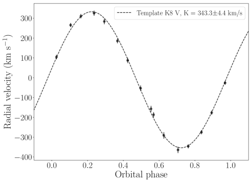
4.1 معلمات النظام
يعتمد تحديدنا لنسبة الكتلة وكتلة NS على تحديد المحصول عليه من قياس انزياحات دوبلر لخطوط الامتصاص على امتداد الفترة المدارية. ويتأثر هذا القياس بخطأ نظامي بسبب تشعيع النابض، الذي يحدد توزيع امتصاص غير منتظم على السطح النجمي. فخطوط الامتصاص المتكونة في الغلاف الضوئي للمرافق تُخمد جزئيًا في وجهه المشعع، بحيث ينزاح مركز ضوء هذه الخطوط نحو الوجه الخارجي للمرافق، مسببًا انزياحًا نظاميًا في السرعة المحددة عند كل طور ثنائي. وبناءً على ذلك، فإن منحنى السرعة الشعاعية ليس جيبيًا تمامًا، و الناتجة من ملاءمة منحنى جيبي تختلف عن تلك الموافقة لمركز كتلة النجم المانح. وفي حالتنا، عند النظر إلى خطوط الامتصاص فقط في الارتباط المتبادل مع القوالب النجمية، يمكن أن تكون المرصودة مبالغًا فيها.
كما هو مبين في Wade and Horne (1988)، صححنا السرعة باستخدام ما يسمى تصحيح . ونصف السعة المصحح للسرعة الشعاعية المرصودة هو:
| (1) |
هنا، عامل تصحيح هندسي أصغر من الوحدة (). يشير إلى انبعاث منتظم فوق النجم المانح، ومن ثم إلى عدم وجود تصحيح . إذا كان نصف الكرة غير المشعع ذا قوة خط امتصاص منتظمة، وكان نصف الكرة الآخر لا يسهم إطلاقًا في خطوط الامتصاص النجمية المرصودة، فإن (Wade and Horne 1988). ومن ثم، بتطبيق تصحيح (المعادلة 1)، نحصل على =298.77.7 km s-1. وهذا افتراض غير واقعي في حالة J1048 يؤدي إلى الحصول على حد أدنى راسخ لـ ، لأن كلا نصفي الكرة يسهمان في خطوط الامتصاص المرصودة (انظر الشكل 6). ومن جهة أخرى، فإن القيمة المقاسة km s-1، من دون تصحيح ، تمثل حدًا أعلى.
باستخدام دالة كتلة NS من Deneva et al. (2016)، اشتققنا نصف سعة السرعة الشعاعية المسقطة للنابض =72.73960.0003 km s-1، حيث إن هو نصف المحور الأكبر المسقط لمدار النابض و هي الفترة المدارية. وبدمج و ( km s-1، عند 1 c.l.)، وجدنا نسبة كتلة قدرها . وهذا يعني أن كتلة NS، =، هي . وبتثبيت الميلان عند الحد الأعلى بسبب غياب كسوفات الأشعة السينية (Yap et al. 2019)، قيّدنا كتلة NS ضمن المجال وكتلة المرافق ضمن المجال . ونفضل قيم الأقرب إلى سيناريو الكتلة الأكبر، لأن التشعيع يبدو أنه يؤثر تأثيرًا ضعيفًا في قياس . ومن جهة أخرى، إذا افترضنا الحد الأعلى لكتلة NS وهو (Margalit and Metzger 2017)، يمكننا اشتقاق حد أدنى راسخ للميلان قدره لنظام غير مشعع () و لنظام شديد التشعيع ().
نلاحظ أن قيم و و المحصولة هنا أدنى نظاميًا من تلك المحصولة من Strader et al. (2019). غير أن بيانات Strader et al. (2019) موزعة على أربع ليال غير متتالية (في حين جُمعت بياناتنا في الليلة نفسها) ولم تُعدل لتصحيح . وبدون تصحيح ، نحصل على حد أعلى قدره 1.76 (عند 1 c.l.)، متوافق ضمن الأخطاء مع قيمة Strader et al. (2019).
5 التصوير المقطعي بدوبلر لـ H
أنشأنا مطيافًا متعقبًا يغطي المجال 6250–6700 Å لمقارنة بنى خطوط الامتصاص والانبعاث (انظر الشكل 8). تظهر سمات الامتصاص عبر الدورة المدارية كلها وتتتبع حركة النجم المرافق، في حين تتلاشى خطوط انبعاث H عند بعض الأطوار المدارية (انظر القسم 3). تُعرض صورة دوبلر المشتقة لخط انبعاث H، المحسوبة بطريقة الإنتروبيا العظمى (Marsh and Horne 1988)، بإحداثيات السرعة في الشكل 9. وقد أضيف فوق الخريطة فص روش للمرافق ومسار السقوط الحر الجذبي لتيار الغاز. يبين الشكل 9 الخريطة المنشأة بافتراض ميلان واستخدام الحد الأعلى مع و.
لا يمكن تفسير هذه الصورة كخريطة متوسطة زمنيًا لأن البيانات اكتُسبت خلال ليلة واحدة ولأن النظام يُظهر تغيرًا قويًا على مقياس زمني قصير جدًا (بضعة أيام؛ Wang et al. 2013; Yap et al. 2019). لذلك تمثل خريطة دوبلر هذه توزيعات السرعة ثنائية الأبعاد 2D لانبعاث H في مارس 19، 2020.
لا تُظهر الخريطة دليلًا على قرص تراكم، لكنها تُظهر انبعاثًا بقعيًا خافتًا نسبيًا متطابقًا في الطور والسرعة مع النجم المرافق. ويُكشف مكون ملف S-wave الصادر من المرافق في الأطياف المتعقبة (انظر الشكل 3)، رغم أن الانبعاث ليس مستمرًا على طول المدار. إضافة إلى ذلك، تكشف خريطة H عن بقعة ساطعة ممتدة في ربع السرعة العلوي الأيسر قرب النجم المرافق، مما يوحي بصدمة داخل الثنائية نشأت من التفاعل بين ريح النابض النسبوية والمادة المغادرة للنجم المرافق. ويشير قرب الصدمة داخل الثنائية من النجم المرافق إلى وجود مادة في تلك المنطقة. فإذا كان الثانوي يملأ فص روش الخاص به، فإن المادة تتدفق بعيدًا عن L1؛ وإلا فإن آلية فقدان كتلة المرافق تُدفع باجتثاث الطبقات الخارجية للنجم بواسطة ريح النابض الطاقية. وبالنظر إلى الفصل المداري ونسبة الكتلة ، يمكننا تحديد نصف قطر فص روش التقريبي (Eggleton 1983). وبافتراض نحصل على ، وهو قابل للمقارنة مع نصف قطر نجم K8 V (Pasinetti Fracassini et al. 2001). اشتق Yap et al. (2019) عامل ملء لفص روش قدره 0.86 أثناء طور منحنى ضوئي بصري أحادي القمة، مما يثير الشكوك حول ما إذا كان الثانوي يملأ فص روش حقًا. وبالنظر إلى عدم اليقين في وفي حجم النجم المرافق المشعع بريح النابض، لا يفضل تحليلنا آلية لفقدان الكتلة على الأخرى. ولا يوجد دليل على انبعاث من قرص تراكم، مع أن تشكله قد يحدث على مقياس زمني سريع جدًا، كما في IGR J18245–2452 (Papitto et al. 2013).
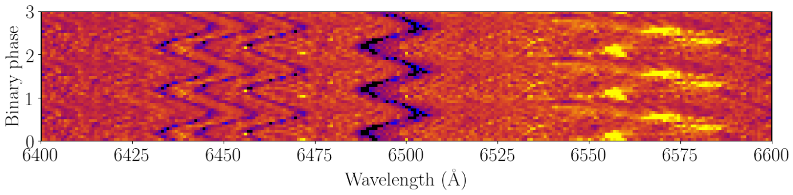
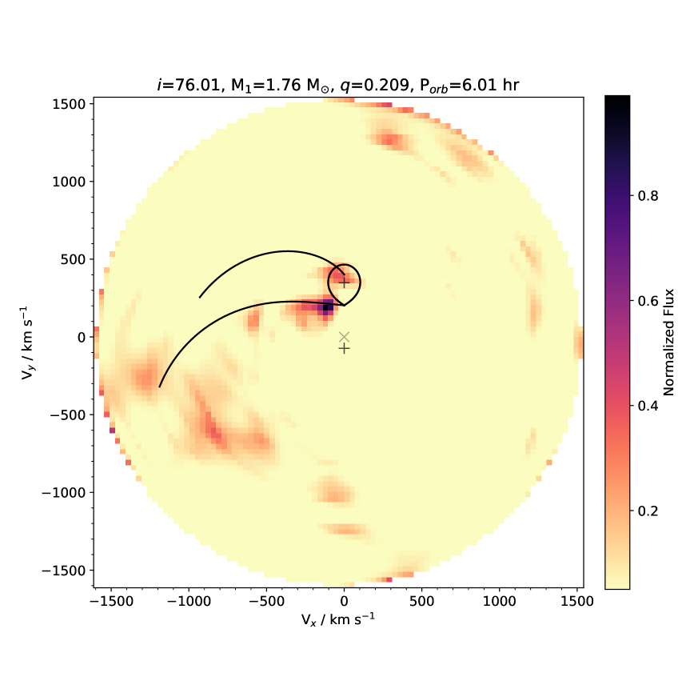
6 تحليل التوقيت الراديوي
أُزيل التشتت أولًا على نحو متماسك من البيانات الخام المأخوذة في نمط النطاق الأساسي بواسطة SRT في النطاق P وبواسطة LOFAR في نطاق VHF (Bassa et al. 2017) عند قياس التشتت الاسمي (DM) لـ J1048، وهو 16.65 pc cm-3. وجُمعت معاملات Stokes الأربعة لتشكيل ملفات نمط بحث للشدة الكلية. بالنسبة إلى بيانات SRT في النطاق P، احتفظت هذه الملفات باستبانة زمنية قدرها 64 s وبقنوات ترددية عددها 640، عرض كل منها 125-KHz. وبالنسبة إلى بيانات LOFAR في نطاق VHF، احتفظت ملفات نمط البحث باستبانة زمنية قدرها 81.92 s وبقنوات عرضها 1600، 48-kHz. كما شرحنا في القسم 2.2، كانت بيانات SRT في النطاق L مأخوذة أصلًا في نمط البحث، ولذلك لم تكن هناك حاجة إلى معالجة سابقة لها.
عندما صارت كل الأرصاد متاحة كملفات نمط بحث، أجرينا التحليل على النحو الآتي. لكل رصد، أنشأنا أولًا قناعًا لترشيح أقوى RFI موجودة في البيانات، باستخدام روتين rfifind، وهو جزء من حزمة البحث عن النباضات PRESTO1414 14 https://www.cv.nrao.edu/~sransom/presto (Ransom et al. 2002). وبأخذ القناع في الاعتبار، استخدمنا بعد ذلك أداة PRESTO prepdata لتوليد سلسلة زمنية منزوعة التشتت، مجموعَة تردديًا وخالية من RFI. وطُويت هذه السلاسل باستخدام أداة PRESTO prepfold والزيج المنشور بواسطة Deneva et al. (2016). غير أنه من المعروف جيدًا أن كثيرًا من RBs وBWs تُظهر تغيرًا مداريًا قويًا (Shaifullah et al. 2016; Bak Nielsen et al. 2020; Hebbar et al. 2020)، مما يجعل الزيج القديم كثيرًا غير قادر على التنبؤ بالطور المداري الفعلي في زمن لاحق. ويؤدي ذلك إلى تصحيح خاطئ لتأخير Rømer المداري (Blandford and Teukolsky 1976)، وبالتالي يمكن أن يُفقد الانبعاث النبضي عند الطي. اتباعًا لـ Ridolfi et al. (2016)، تجاوزنا هذه المشكلة بإجراء بحث شامل في زمن العقدة الصاعدة، ، باستخدام SPIDER_TWISTER1515 15 https://github.com/alex88ridolfi/SPIDER_TWISTER وخطوة حجمها s. حصلنا على كشف واضح لـ J1048 في رصد النطاق L المأخوذ في أغسطس 2019 عند استخدام قيمة MJD لـ مقدارها . وهذه متأخرة بمقدار s عن قيمة التي يمكن استقراؤها من زيج Deneva et al. (2016). ومع ذلك، أدى طي بيانات النطاق P المأخوذة في الوقت نفسه بالمعلمات نفسها إلى عدم الكشف.
حُللت أرصاد SRT+LOFAR المتزامنة لـ J1048 المأخوذة في مارس 2020 بالطريقة نفسها. وكان الفرق الوحيد أنه، نظرًا إلى المدة الطويلة جدًا لهذه الأرصاد (التي غطت مدارًا كاملًا)، قسمناها أيضًا إلى مقاطع طول كل منها 1-hr وبحثنا عن نبضات J1048 في كل منها على حدة. ومع ذلك، لم نتمكن من كشف J1048 في أي من النطاقات الراديوية الثلاثة.
يمكن على الأرجح عزو عدم الكشف في رصد النطاق L لشهر مارس 2020 إلى التلألؤ بين النجمي، الذي يؤثر عادة في النباضات ذات DMs المنخفضة جدًا (مثل J1048). وهذا الأثر يعزز أو يثبط عشوائيًا كثافة الفيض المرصودة للنابض، مع اعتماد على تردد الرصد. ويؤكد أن التلألؤ مهم فعلًا لـ J1048 كشف رصد النطاق L في أغسطس 2019 (الشكل 10): إذ نرى أن إشارة J1048 النبضية تُعزز فقط في نطاق ضيق جدًا حول GHz، بينما تكون بالكاد قابلة للكشف في بقية النطاق. بالإضافة إلى التلألؤ، يمكن أن تكون آلية أخرى مسؤولة عن عدم الكشف في النطاقين P وVHF هي الامتصاص بسبب مادة الكسوف داخل الثنائية. يمكن عزو الكسوفات الجزئية أو الكلية المرصودة في كثير من أنظمة BW وRB (Rasio et al. 1989) إلى العمق البصري المعتمد على التردد لمادة الكسوف. فالطبقات الكثيفة من المادة المتأينة المجتثة من النجم المانح أقل شفافية عند الترددات المنخفضة، مما يحدد الكسوفات في نطاقي P وVHF (Polzin et al. 2018). وكأثر جانبي، يمكن للتبعثر (Lorimer and Kramer 2004) عند الترددات المنخفضة أن يلطخ النبضات الفردية، جاعلًا إياها أعرض من فترة دوران النابض، لكنه لا يمنع كشفها.
من حالات عدم الكشف، يمكننا حساب حد أعلى لكثافة الفيض المتوسطة، ، التي لا بد أن J1048 كان يملكها وقت الأرصاد. وللقيام بذلك، نستخدم معادلة الراديومتر المعدلة (Manchester et al. 1996; Lorimer and Kramer 2004)
| (2) |
حيث إن عامل تصحيح بسبب الرقمنة؛ و هو عدد الاستقطابات المجموعة؛ وS/N هي نسبة إشارة النبضة إلى الضجيج؛ و درجة حرارة ضجيج النظام؛ و كسب التلسكوب؛ و زمن التكامل؛ و عرض النطاق؛ و دورة عمل النبضة. يسرد الجدول 6 قيم كل معلمة لكل الأرصاد الراديوية التي استخدمناها في تقديرات . بالنسبة إلى عدم الكشف في النطاق P في أغسطس 2019 نقدر mJy، أما في حالة عدم الكشف في مارس 2020 فنجد mJy و mJy و mJy لأرصاد P وL وVHF، على التوالي. وللكشف الراديوي الوحيد المتاح لنا (رصد النطاق L في أغسطس 2019) نقيس mJy.
| Band | Gain | ||||||
|---|---|---|---|---|---|---|---|
| [K] | [K Jy-1] | [MHz] | [s] | [mJy] | |||
| L (August 2019) | 30a | 0.55a | 281 | 5400 | 2 | 1 | 1.2 |
| P (August 2019) | 65a | 0.52a | 60 | 5400 | 2 | 1 | 0.57 |
| L (March 2020) | 30a | 0.55a | 400 | 29960 | 2 | 1 | 0.05 |
| P (March 2020) | 65a | 0.52a | 60 | 29960 | 2 | 1 | 0.24 |
| 0.1-0.2 GHz (March 2020) | 892b | 0.18c | 76 | 25200 | 2 | 1 | 9.2 |
a https://srt-documentation.readthedocs.io/en/latest/antenna.html#lp-band-filters
b Lawson et al. (1987)
c van Haarlem et al. (2013)
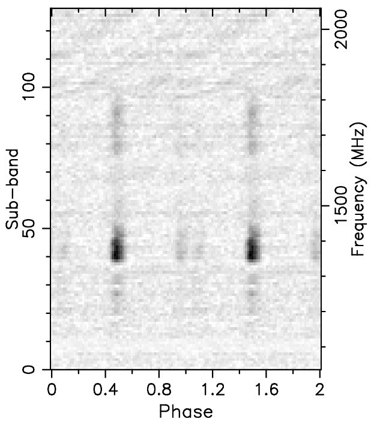
7 تحليل التوقيت البصري
اختبرنا البيانات المكتسبة بـ IFI+Iqueye بحثًا عن نبضات، وذلك بطي الأرصاد الثلاثة كلها معًا بفترة دوران النابض (0.00466516294153(3) s، مستقرأة من Deneva et al. 2016 عند MJD 58927.0) وباستخدام 10 حاوية طور. وثُبت زمن المرور بالعقدة الصاعدة عند MJD (انظر القسم 6). وطُبق اختبار بحد ثابت يقابل معدل العد المتوسط على الملف المطوي. ويُرجع قيمة 11.5 لـ 9 درجة حرية، تقابل احتمال إيجابية كاذبة قدره 24% ودلالة لانبعاث نبضي لا تتجاوز 1.2. وتوفر اختيارات مختلفة لعدد حاويات الطور نتائج مشابهة.
اشتُق حد أعلى محافظ للانبعاث البصري النبضي من أطياف القدرة للأرصاد الثلاثة. وتقابل القدرة الزائدة القصوى في مجال التردد 0.5-500 Hz مع حاوية زمنية 1 ms تقلبًا كسريًا بجذر متوسط مربع قدره % على المنحنى الضوئي غير المطروح منه الخلفية، أو counts s-1 لمعدل عد الخلفية المتوسط المرصود. ويشير هذا الحد الأعلى إلى تجربة واحدة لزمن المرور بالعقدة الصاعدة.
أجرينا أيضًا بحثًا بطي العهود مع تغيير قيمة لحقبتنا ضمن مجال بين -250 s و+250 s حول القيمة المذكورة أعلاه وبخطوات 1 s، وطي قوائم الأحداث باستخدام 16 حاوية لكل فترة. ولم تُكشف أي إشارة معنوية. الحد الأقصى لـ هو لـ 15 درجة حرية، وهو يقابل دلالة لا تتجاوز 1.6 (لـ 501 تجربة).
8 المناقشة والاستنتاجات
أكدت الأرصاد متعددة الأطوال الموجية المكتسبة في مارس 2020 التغير الشديد في انبعاث J1048 الذي كشفه Deneva et al. (2016) وCho et al. (2018) وStrader et al. (2019) وYap et al. (2019). رصدنا تغيرات انبعاثية سريعة وقوية في خط انبعاث H على طول المدار (الشكل 2). وباستخدام القياس الضوئي البصري كشفنا نظيرًا بمتوسط قدر 19.3 mag مع تغير مداري نموذجي للأنظمة متوسطة التشعيع (الشكل 5). وأظهر شكل المنحنى الضوئي في النطاق أن التعديل يهيمن عليه تسخين النابض لا التغيرات الإهليلجية. وقسنا بتحليل التوقيت الراديوي تغيرًا مداريًا قويًا كما في أنظمة RB أخرى (Jaodand et al. 2016; Ridolfi et al. 2016)؛ إذ تأخر عن القيمة المتنبأ بها من زيج Deneva et al. (2016) بمقدار 28 s.
قسنا منحنى السرعة الشعاعية عبر الارتباط المتبادل مع نجوم قوالب من الأنواع المتأخرة، ووضعنا القيود الآتية على نسبة الكتلة وكتلة NS وكتلة النجم المرافق: ، و، و. وبافتراض الحد الأعلى للميلان (Yap et al. 2019)، اشتققنا كتلة NS مقدارها . وبالنظر إلى عدم اليقين في الميلان، لا يمكننا استبعاد وجود NS عالي الكتلة. وبافتراض الحد الأعلى لكتلة NS وهو ، يجب أن يكون ميلان J1048 هو إذا كان النظام غير مشعع، و إذا كان شديد التشعيع. قيّدنا النوع الطيفي للنجم المانح بأنه نجم K8 V (4000 K). ويسهم النجم المرافق بنسبة 56% من الضوء الكلي المرصود عند 6400Å، مما يوحي بوجود مصدر تخفيف إضافي مثل صدمة داخل الثنائية.
قدمنا أول تصوير مقطعي بدوبلر لـ H في نظام RB ضمن حالة نابض راديوي مدعوم بالدوران. ولم تكن خرائط دوبلر لـ RBs قد أُنجزت إلا للنظامين الانتقاليين PSR J1023+0038 وXSS J12270-4859، ولكن أثناء حالة القرص (Hakala and Kajava 2018; de Martino et al. 2014). وكشفت خريطة دوبلر المعاد بناؤها لـ H انبعاثًا ذا شأن قرب نقطة لاغرانج الداخلية على امتداد مسار السقوط الحر الجذبي للغاز وعند سطح النجم المرافق (انظر الشكل 9). البنية الممتدة المرئية في خط H هي دليل أول وواضح على انبعاث صدمة داخل الثنائية، سببه تفاعل ريح النابض مع مادة مفقودة من النجم المرافق. وقد اقتُرحت مثل هذه الصدمات سابقًا لتكون مسؤولة عن التغير المداري في الأشعة السينية ضمن ثنائيات MSP (Bogdanov et al. 2005)، كما تأكد وجودها بصورة غير مباشرة بعدة أرصاد في مجالات مختلفة (Wadiasingh et al. 2018). ويجعل كشفنا لانبعاث موضعي من خط H المصدر J1048 أول RB يُظهر دليلًا مباشرًا على صدمة داخل الثنائية تُصدر عند أطوال موجية أخرى. وإذا كان النجم الثانوي يفيض من فص روش، فقد ينتج الانبعاث المرصود من تفاعل الغاز المتدفق عبر مع ريح النابض. وبسبب نقص القيود القوية على عامل ملء فص روش (انظر Yap et al. 2019)، قد يكون انبعاث الصدمة أيضًا ناتجًا من تفاعل المادة المجتثة من المرافق مع ريح النابض القوية. وفي هذا التكوين الأخير، وبالنظر إلى أن انبعاث H يأتي قريبًا من ، قد يكون ذلك توقيعًا لمادة من الصدمة داخل الثنائية تُقاد إلى سطح المرافق على امتداد المجال المغناطيسي للنجم المرافق، كما افترض Sanchez and Romani (2017). وقد تكون حقيقة أن هذا النظام يُظهر تغيرًا في عهود مختلفة متوافقة مع هذا السيناريو.
يمكن أن يفسر وجود انبعاث الصدمة داخل الثنائية الكسوفات الراديوية المطولة (Deneva et al. 2016, 2021) والظهور المتقطع لخطوط انبعاث H ثنائية القمة (Strader et al. 2019) المرصودة في J1048. وتؤكد هذه الخريطة السيناريو المفترض الذي تتميز فيه RBs بكمية كبيرة من المادة المنزوعة عن النجم المرافق بسبب عملية اجتثاث النابض (Breton et al. 2013). تبدو الصدمة داخل الثنائية في J1048 أقرب إلى المرافق منها إلى النابض. ويتعارض هذا الدليل مع السيناريو المقترح حديثًا لانبعاث الصدمة السيني في أنظمة RB (Wadiasingh et al. 2018; van der Merwe et al. 2020)، حيث يُفترض أن تكون الصدمة داخل الثنائية أقرب إلى النابض. ويدعم هذا الافتراض كبر كسور الكسوف الراديوي المرصودة في RBs عند الاقتران العلوي للنابض (Archibald et al. 2009; Roy et al. 2015; Deneva et al. 2016)، وكذلك التعديل المداري السيني ثنائي القمة المتمركز عند الاقتران السفلي للنابض (Romani and Sanchez 2016; Al Noori et al. 2018; de Martino et al. 2020). غير أن خريطة دوبلر لـ J1048 توحي بأن انبعاثات الأشعة السينية وH لا تتتبع المنطقة نفسها من مادة الصدمة داخل الثنائية. وقد يتتبع انبعاث H جزءًا من الصدمة داخل الثنائية أقرب إلى المرافق، في حين قد تنشأ الأشعة السينية أقرب إلى NS.
لا يمكن عزو غياب الإشارة الراديوية النبضية في أرصاد مارس 2020 إلى انتقال حالة مثل ذلك المرصود في tMSPs (Archibald et al. 2009; Papitto et al. 2013)، بل إلى ظواهر التلألؤ أو الامتصاص (Gedalin and Eichler 1993; Thompson et al. 1994; Roy et al. 2015). عند تردد منخفض جدًا (0.1-0.2 GHz) قد تُكسف الإشارة الراديوية كليًا بالامتصاص بسبب وجود سحابة غازية شديدة التأين منخفضة الكثافة منسكبة من المرافق (Broderick et al. 2016). وبالفعل، لم تُرصد أي زيادة في الفيضين السيني والبصري، وأظهرت خريطة دوبلر لـ H بوضوح وجود صدمة داخل الثنائية لا قرص تراكم. وقد يؤدي وجود جبهة صدمة ممتدة في المستقبل القريب إلى تشكل قرص تراكم، لكن كما رصدنا في tMSPs الثلاثة المكتشفة حتى الآن، فإن انتقال الحالة غير قابل للتنبؤ ويحدث على مقياس زمني سريع جدًا (بضعة أسابيع) (Archibald et al. 2009; Papitto et al. 2013; Bassa et al. 2014).
على الرغم من أن J1048 واحد من عدد قليل فقط من RBs التي تُظهر أحيانًا خطوط انبعاث في أطيافها البصرية، فإن سلوكًا مشابهًا يُرصد في RBs وBWs أخرى، مثل 3FGL J0838.8–2829 (Halpern et al. 2017b, a)، وPSR J1628–3205 (Cho et al. 2018; Strader et al. 2019)، وPSR J1311–3430 (Romanova and Owocki 2015). لذلك تبدو الأرصاد الطيفية الإضافية لهذه RBs وBWs مبررة. وسيكون من المفيد رصد هذه الأنظمة لعدة أطوار مدارية متجاورة لدراسة تطور خريطة دوبلر وتأكيد التغير السريع في توزيع الغاز.
Acknowledgements.
نشكر المحكم على تعليقاته واقتراحاته المفيدة جدًا. تقر AMZ بدعم PHAROS COST Action (CA16214). وتود AMZ شكر G. Benevento على تعليقاته على المسودة وعلى النقاشات. نشكر Michele Fiori وGiampiero Naletto (جزء من فريق Aqueye+Iqueye) على الدعم وأنشطة الخدمة المنفذة ضمن إطار هذا المشروع. نشكر Jorge Casares على تزويدنا بأطياف القوالب النجمية. يقر SC وPDA بالدعم من منحة ASI I/004/11/3. ويعرب AR عن امتنانه للدعم المالي من منحة البحث “iPeska” (P.I. Andrea Possenti) الممولة ضمن النداء الوطني INAF PRIN-SKA/CTA الموافق عليه بالمرسوم الرئاسي 70/2016. وتحظى FCZ بدعم زمالة Juan de la Cierva. ويقر AP وFCZ بدعم International Space Science Institute (ISSI- Beijing)، الذي موّل واستضاف الفريق الدولي ‘Understanding and Unifying the Gamma-rays Emitting Scenarios in High Mass and Low Mass X-ray Binaries’. ويقر DDM وAP بالدعم المالي من Italian Space Agency (ASI) وNational Institute for Astrophysics (INAF) بموجب الاتفاقيات ASI-INAF I/037/12/0 وASI-INAF n.2017-14-H.0؛ ومن INAF ”Sostegno alla ricerca scientifica main streams dell’INAF”، المرسوم الرئاسي 43/2018 ومن PRIN-SKA/CTA: ”Toward the SKA and CTA era” (PI: Giroletti) المرسوم الرئاسي 70/2016؛ ومن دعم جزئي من PHAROS COST Action (CA16214). ويقر TMD بالدعم من Spanish Ministerio de Ciencia e Innovación بموجب المنحة AYA2017-83216-P ومن زمالة Ramón y Cajal RYC-2015-18148. وتقر LZ بالدعم المالي من Italian Space Agency (ASI) وNational Institute for Astrophysics (INAF) بموجب الاتفاقيات ASI-INAF I/037/12/0 وASI-INAF n.2017-14-H.0 ومن INAF ”Sostegno alla ricerca scientifica main streams dell’INAF” المرسوم الرئاسي 43/2018. يموَّل Sardinia Radio Telescope من Department of Universities and Research (MIUR)، وItalian Space Agency (ASI)، وAutonomous Region of Sardinia (RAS)، ويشغله National Institute for Astrophysics (INAF) بصفته مرفقًا وطنيًا. استخدم هذا العمل بيانات مقدمة من UK Swift Science Data Centre في University of Leicester. وتستند النتائج المعروضة في هذه الورقة إلى أرصاد جُمعت في European Organisation for Astronomical Research in the Southern Hemisphere ضمن برنامج ESO ذي المعرف 0104.D-0589(A)، وإلى الأرصاد المجموعة في تلسكوب Galileo (Asiago، Italy) التابع لـ University of Padova، وإلى بيانات حُصل عليها بواسطة International LOFAR Telescope (ILT) ضمن رمز المشروع DDT13_001. LOFAR هو Low Frequency Array الذي صممته وبنته ASTRON. وله مرافق رصد ومعالجة بيانات وتخزين بيانات في عدة بلدان، تملكها جهات مختلفة (لكل منها مصادر تمويلها)، وتشغلها مجتمعة مؤسسة ILT بموجب سياسة علمية مشتركة. وقد استفادت موارد ILT من مصادر التمويل الكبرى الحديثة التالية: CNRS-INSU وObservatoire de Paris وUniversité d’Orléans، فرنسا؛ BMBF وMIWF-NRW وMPG، ألمانيا؛ Science Foundation Ireland (SFI)، وDepartment of Business, Enterprise and Innovation (DBEI)، أيرلندا؛ NWO، هولندا؛ وThe Science and Technology Facilities Council، المملكة المتحدة.References
- X-Ray and Optical Studies of the Redback System PSR J2129-0429. ApJ 861 (2), pp. 89. External Links: Document, ADS entry Cited by: §8.
- A new class of radio pulsars. Nature 300 (5894), pp. 728–730. External Links: Document, ADS entry Cited by: §1.
- Successful commissioning of FORS1 - the first optical instrument on the VLT.. The Messenger 94, pp. 1–6. External Links: ADS entry Cited by: §2.1.1.
- A Radio Pulsar/X-ray Binary Link. Science 324 (5933), pp. 1411. External Links: Document, 0905.3397, ADS entry Cited by: §1, §8, §8.
- Timing stability of three black widow pulsars. MNRAS 494 (2), pp. 2591–2599. External Links: Document, 2003.10352, ADS entry Cited by: §6.
- A state change in the low-mass X-ray binary XSS J12270-4859. MNRAS 441 (2), pp. 1825–1830. External Links: Document, 1402.0765, ADS entry Cited by: §1, §8.
- Enabling pulsar and fast transient searches using coherent dedispersion. Astronomy and Computing 18, pp. 40–46. External Links: Document, 1607.00909, ADS entry Cited by: §6.
- Arrival-time analysis for a pulsar in a binary system.. ApJ 205, pp. 580–591. External Links: Document, ADS entry Cited by: §6.
- An X-Ray Variable Millisecond Pulsar in the Globular Cluster 47 Tucanae: Closing the Link to Low-Mass X-Ray Binaries. ApJ 630 (2), pp. 1029–1036. External Links: Document, astro-ph/0506031, ADS entry Cited by: §8.
- Discovery of the Optical Counterparts to Four Energetic Fermi Millisecond Pulsars. ApJ 769 (2), pp. 108. External Links: Document, 1302.1790, ADS entry Cited by: §3, §8.
- Low-radio-frequency eclipses of the redback pulsar J2215+5135 observed in the image plane with LOFAR. MNRAS 459 (3), pp. 2681–2689. External Links: Document, 1604.05722, ADS entry Cited by: §1, §8.
- The Swift X-Ray Telescope. Space Sci. Rev. 120 (3-4), pp. 165–195. External Links: Document, astro-ph/0508071, ADS entry Cited by: §2.3.
- The neutron stars of Soft X-ray Transients. A&A Rev. 8 (4), pp. 279–316. External Links: Document, astro-ph/9805079, ADS entry Cited by: §1.
- A coordinated campaign on the intermediate polar AE AQR - I. The system parameters. MNRAS 282 (1), pp. 182–190. External Links: Document, ADS entry Cited by: §4.
- Variable Heating and Flaring of Three Redback Millisecond Pulsar Companions. ApJ 866 (1), pp. 71. External Links: Document, 1809.00215, ADS entry Cited by: §1, §1, §2.3, §8, §8.
- Six New Millisecond Pulsars from Arecibo Searches of Fermi Gamma-Ray Sources. ApJ 819 (1), pp. 34. External Links: Document, 1601.05343, ADS entry Cited by: §1.
- Unveiling the redback nature of the low-mass X-ray binary XSS J1227.0-4859 through optical observations. MNRAS 444 (4), pp. 3004–3014. External Links: Document, 1408.6138, ADS entry Cited by: §8.
- NuSTAR and Parkes observations of the transitional millisecond pulsar binary XSS J12270-4859 in the rotation-powered state. MNRAS 492 (4), pp. 5607–5619. External Links: Document, 2001.05898, ADS entry Cited by: §8.
- Timing of Eight Binary Millisecond Pulsars Found with Arecibo in Fermi-LAT Unidentified Sources. ApJ 909 (1), pp. 6. External Links: Document, 2012.15185, ADS entry Cited by: §1, §2.3, §3, §8.
- Multiwavelength Observations of the Redback Millisecond Pulsar J1048+2339. ApJ 823 (2), pp. 105. External Links: Document, 1601.03681, ADS entry Cited by: §1, §2.1.2, §3, §4.1, Figure 9, §6, §7, §8, §8.
- Aproximations to the radii of Roche lobes.. ApJ 268, pp. 368–369. External Links: Document, ADS entry Cited by: §5.
- Optical detection and characterization of the eclipsing pulsar’s companion. Nature 334 (6184), pp. 686–689. External Links: Document, ADS entry Cited by: §1.
- A millisecond pulsar in an eclipsing binary. Nature 333 (6170), pp. 237–239. External Links: Document, ADS entry Cited by: §1.
- Nonlinear Plasma Mechanisms of Pulsar Eclipse in Binary Systems. ApJ 406, pp. 629. External Links: Document, ADS entry Cited by: §8.
- The Swift Gamma-Ray Burst Mission. ApJ 611 (2), pp. 1005–1020. External Links: Document, astro-ph/0405233, ADS entry Cited by: §2.1.3.
- Black widow evolution: magnetic braking by an ablated wind. MNRAS 495 (4), pp. 3656–3665. External Links: Document, 2001.04475, ADS entry Cited by: §1.
- Black widow formation by pulsar irradiation and sustained magnetic braking. MNRAS 500 (2), pp. 1592–1603. External Links: Document, 2008.06506, ADS entry Cited by: §1.
- Variable polarisation and Doppler tomography of PSR J1023+0038 - Evidence for the magnetic propeller during flaring?. MNRAS 474 (3), pp. 3297–3306. External Links: Document, 1711.03097, ADS entry Cited by: §8.
- A Likely Redback Millisecond Pulsar Counterpart of 3FGL J0838.8-2829. ApJ 844 (2), pp. 150. External Links: Document, 1706.09511, ADS entry Cited by: §8.
- X-Ray and Optical Study of the Gamma-ray Source 3FGL J0838.8-2829: Identification of a Candidate Millisecond Pulsar Binary and an Asynchronous Polar. ApJ 838 (2), pp. 124. External Links: Document, 1701.04116, ADS entry Cited by: §8.
- On the vanishing orbital X-ray variability of the eclipsing binary millisecond pulsar 47 Tuc W. MNRAS. External Links: Document, 2009.13561, ADS entry Cited by: §6.
- TEMPO2, a new pulsar-timing package - I. An overview. MNRAS 369 (2), pp. 655–672. External Links: Document, astro-ph/0603381, ADS entry Cited by: §2.1.2.
- Timing Observations of PSR J1023+0038 During a Low-mass X-Ray Binary State. ApJ 830 (2), pp. 122. External Links: Document, 1610.01625, ADS entry Cited by: §8.
- Variations in the spectral index of the galactic radio continuum emission in the northern hemisphere.. MNRAS 225, pp. 307–327. External Links: Document, ADS entry Cited by: Table 6.
- Can Neutron Stars Ablate Their Companions?. ApJ 379, pp. 359. External Links: Document, ADS entry Cited by: §1.
- Peering into the Dark Side: Magnesium Lines Establish a Massive Neutron Star in PSR J2215+5135. ApJ 859 (1), pp. 54. External Links: Document, 1805.08799, ADS entry Cited by: §3.
- Super-Massive Neutron Stars and Compact Binary Millisecond Pulsars. arXiv e-prints, pp. arXiv:1910.09572. External Links: 1910.09572, ADS entry Cited by: §1.
- Handbook of Pulsar Astronomy. Vol. 4. External Links: ADS entry Cited by: §6, §6.
- The Parkes Southern Pulsar Survey. I. Observing and data analysis systems and initial results.. MNRAS 279 (4), pp. 1235–1250. External Links: Document, ADS entry Cited by: §6.
- Constraining the Maximum Mass of Neutron Stars from Multi-messenger Observations of GW170817. ApJ 850 (2), pp. L19. External Links: Document, 1710.05938, ADS entry Cited by: §4.1.
- Images of accretion discs - II. Doppler tomography.. MNRAS 235, pp. 269–286. External Links: Document, ADS entry Cited by: §1, §5.
- Iqueye, a single photon-counting photometer applied to the ESO new technology telescope. A&A 508 (1), pp. 531–539. External Links: Document, ADS entry Cited by: §2.1.2, §2.1.2.
- Swings between rotation and accretion power in a binary millisecond pulsar. Nature 501 (7468), pp. 517–520. External Links: Document, 1305.3884, ADS entry Cited by: §1, §5, §8.
- Transitional millisecond pulsars. arXiv e-prints, pp. arXiv:2010.09060. External Links: 2010.09060, ADS entry Cited by: §1.
- Catalogue of Apparent Diameters and Absolute Radii of Stars (CADARS) - Third edition - Comments and statistics. A&A 367, pp. 521–524. External Links: Document, astro-ph/0012289, ADS entry Cited by: §5.
- Study of spider pulsar binary eclipses and discovery of an eclipse mechanism transition. MNRAS 494 (2), pp. 2948–2968. External Links: Document, 2003.02335, ADS entry Cited by: §1.
- The low-frequency radio eclipses of the black widow pulsar J1810+1744. MNRAS 476 (2), pp. 1968–1981. External Links: Document, 1802.02594, ADS entry Cited by: §6.
- On the origin of the recently discovered ultra-rapid pulsar. Current Science 51, pp. 1096–1099. External Links: ADS entry Cited by: §1.
- Fourier Techniques for Very Long Astrophysical Time-Series Analysis. AJ 124, pp. 1788–1809. External Links: astro-ph/0204349, Document, ADS entry Cited by: §6.
- What Is Causing the Eclipse in the Millisecond Binary Pulsar?. ApJ 342, pp. 934. External Links: Document, ADS entry Cited by: §6.
- Long-term observations of the pulsars in 47 Tucanae - I. A study of four elusive binary systems. MNRAS 462 (3), pp. 2918–2933. External Links: Document, 1607.07248, ADS entry Cited by: §6, §8.
- Surrounded by spiders! New black widows and redbacks in the Galactic field. In Neutron Stars and Pulsars: Challenges and Opportunities after 80 years, J. van Leeuwen (Ed.), IAU Symposium, Vol. 291, pp. 127–132. External Links: Document, 1210.6903, ADS entry Cited by: §1.
- Intra-binary Shock Heating of Black Widow Companions. ApJ 828 (1), pp. 7. External Links: Document, 1606.03518, ADS entry Cited by: §8.
- Accretion, Outflows, and Winds of Magnetized Stars. Space Sci. Rev. 191 (1-4), pp. 339–389. External Links: Document, 1605.04979, ADS entry Cited by: §8.
- The Swift Ultra-Violet/Optical Telescope. Space Sci. Rev. 120 (3-4), pp. 95–142. External Links: Document, astro-ph/0507413, ADS entry Cited by: §2.1.3.
- Discovery of Psr J1227-4853: A Transition from a Low-mass X-Ray Binary to a Redback Millisecond Pulsar. ApJ 800 (1), pp. L12. External Links: Document, 1412.4735, ADS entry Cited by: §8, §8.
- B-ducted Heating of Black Widow Companions. ApJ 845 (1), pp. 42. External Links: Document, 1706.05467, ADS entry Cited by: §8.
- 21 year timing of the black-widow pulsar J2051-0827. MNRAS 462 (1), pp. 1029–1038. External Links: Document, 1607.04167, ADS entry Cited by: §6.
- Fast maximum entropy Doppler mapping. arXiv e-prints, pp. arXiv:9806141. External Links: 9806141, ADS entry Cited by: §2.1.1.
- Observing pulsars and fast transients with LOFAR. A&A 530, pp. A80. External Links: Document, 1104.1577, ADS entry Cited by: §2.2.
- Homogeneous Photometry for Star Clusters and Resolved Galaxies. II. Photometric Standard Stars. PASP 112 (773), pp. 925–931. External Links: Document, astro-ph/0004144, ADS entry Cited by: §2.1.1.
- Optical Spectroscopy and Demographics of Redback Millisecond Pulsar Binaries. ApJ 872 (1), pp. 42. External Links: Document, 1812.04626, ADS entry Cited by: §1, §1, §3, §4.1, Figure 9, §8, §8, §8.
- Millisecond X-Ray Variability from an Accreting Neutron Star System. ApJ 469, pp. L9. External Links: Document, ADS entry Cited by: §1.
- Recycling Pulsars: spins, masses and ages. In Neutron Stars and Pulsars: Challenges and Opportunities after 80 years, J. van Leeuwen (Ed.), IAU Symposium, Vol. 291, pp. 137–140. External Links: Document, 1210.2599, ADS entry Cited by: §1.
- Hydrodynamics of Winds from Irradiated Companion Stars in Low-Mass X-Ray Binaries. ApJ 410, pp. 281. External Links: Document, ADS entry Cited by: §1.
- Physical Processes in Eclipsing Pulsars: Eclipse Mechanisms and Diagnostics. ApJ 422, pp. 304. External Links: Document, ADS entry Cited by: §8.
- The dual-band LP feed system for the Sardinia Radio Telescope prime focus. In Proc. SPIE, Society of Photo-Optical Instrumentation Engineers (SPIE) Conference Series, Vol. 7741, pp. 774126. External Links: Document, ADS entry Cited by: §2.2.
- X-Ray through Very High Energy Intrabinary Shock Emission from Black Widows and Redbacks. ApJ 904 (2), pp. 91. External Links: Document, 2010.01125, ADS entry Cited by: §8.
- LOFAR: The LOw-Frequency ARray. A&A 556, pp. A2. External Links: Document, 1305.3550, ADS entry Cited by: §2.2, Table 6.
- Optical and ultraviolet observations of X-ray binaries.. In X-ray Binaries, pp. 58–125. External Links: ADS entry Cited by: §1.
- The Radial Velocity Curve and Peculiar TiO Distribution of the Red Secondary Star in Z Chamaeleontis. ApJ 324, pp. 411. External Links: Document, ADS entry Cited by: §4.1.
- Pressure Balance and Intrabinary Shock Stability in Rotation-powered-state Redback and Transitional Millisecond Pulsar Binary Systems. ApJ 869 (2), pp. 120. External Links: Document, 1810.12958, ADS entry Cited by: §8, §8.
- Multiband Studies of the Optical Periodic Modulation in the X-Ray Binary SAX J1808.4-3658 during Its Quiescence and 2008 Outburst. ApJ 765 (2), pp. 151. External Links: Document, 1108.4745, ADS entry Cited by: §5.
- A millisecond pulsar in an X-ray binary system. Nature 394 (6691), pp. 344–346. External Links: Document, ADS entry Cited by: §1.
- Face changing companion of the redback millisecond pulsar PSR J1048+2339. A&A 621, pp. L9. External Links: Document, 1901.01948, ADS entry Cited by: §1, §2.3, §4.1, §4, §4, Figure 9, §5, §5, §8, §8, §8.
- (Very) Fast astronomical photometry for meter-class telescopes. Contributions of the Astronomical Observatory Skalnate Pleso 49 (2), pp. 85–96. External Links: 1908.03396, ADS entry Cited by: §2.1.2.
- Aqueye+: a new ultrafast single photon counter for optical high time resolution astrophysics. In Photon Counting Applications 2015, I. Prochazka, R. Sobolewski, and R. B. James (Eds.), Society of Photo-Optical Instrumentation Engineers (SPIE) Conference Series, Vol. 9504, pp. 95040C. External Links: Document, 1505.07339, ADS entry Cited by: footnote 10.